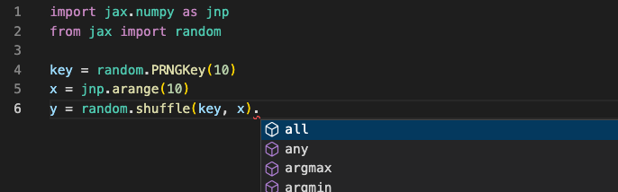

Type Annotation Roadmap for JAX#
Author: jakevdp
Date: August 2022
Background#
Python 3.0 introduced optional function annotations (PEP 3107), which were later codified for use in static type checking around the release of Python 3.5 (PEP 484). To some degree, type annotations and static type checking have become an integral part of many Python development workflows, and to this end we have added annotations in a number of places throughout the JAX API. The current state of type annotations in JAX is a bit patchwork, and efforts to add more have been hampered by more fundamental design questions. This doc attempts to summarize those issues and generate a roadmap for the goals and non-goals of type annotations in JAX.
Why do we need such a roadmap? Better/more comprehensive type annotations are a frequent request from users, both internally and externally. In addition, we frequently receive pull requests from external users (for example, PR #9917, PR #10322) seeking to improve JAX’s type annotations: it’s not always clear to the JAX team member reviewing the code whether such contributions are beneficial, particularly when they introduce complex Protocols to address the challenges inherent to full-fledged annotation of JAX’s use of Python. This document details JAX’s goals and recommendations for type annotations within the package.
Why type annotations?#
There are a number of reasons that a Python project might wish to annotate their code-base; we’ll summarize them in this document as Level 1, Level 2, and Level 3.
Level 1: Annotations as documentation#
When originally introduced in PEP 3107, type annotations were motivated partly by the ability to use them as concise, inline documentation of function parameter types and return types. JAX has long utilized annotations in this manner; an example is the common pattern of creating type names aliased to Any. An example can be found in lax/slicing.py [source]:
Array = Any
Shape = core.Shape
def slice(operand: Array, start_indices: Sequence[int],
limit_indices: Sequence[int],
strides: Optional[Sequence[int]] = None) -> Array:
...
For the purposes of static type checking, this use of Array = Any for array type annotations puts no constraint on the argument values (Any is equivalent to no annotation at all), but it does serve as a form of useful in-code documentation for the developer.
For the sake of generated documentation, the name of the alias gets lost (the HTML docs for jax.lax.slice report operand as type Any), so the documentation benefit does not go beyond the source code (though we could enable some sphinx-autodoc options to improve this: See autodoc_type_aliases).
A benefit of this level of type annotation is that it is never wrong to annotate a value with Any, so it will provide a concrete benefit to developers and users in the form of documentation, without added complexity of satisfying the stricter needs of any particular static type checker.
Level 2: Annotations for intelligent autocomplete#
Many modern IDEs take advantage of type annotations as inputs to intelligent code completion systems. One example of this is the Pylance extension for VSCode, which uses Microsoft’s pyright static type checker as a source of information for VSCode’s IntelliSense completions.
This use of type checking requires going further than the simple aliases used above; for example, knowing that the slice function returns an alias of Any named Array does not add any useful information to the code completion engine. However, were we to annotate the function with a DeviceArray return type, the autocomplete would know how to populate the namespace of the result, and thus be able to suggest more relevant autocompletions during the course of development.
JAX has begun to add this level of type annotation in a few places; one example is the jnp.ndarray return type within the jax.random package [source]:
def shuffle(key: KeyArray, x: Array, axis: int = 0) -> jnp.ndarray:
...
In this case jnp.ndarray is an abstract base class that forward-declares the attributes and methods of JAX arrays (see source), and so Pylance in VSCode can offer the full set of autocompletions on results from this function. Here is a screenshot showing the result:

Listed in the autocomplete field are all methods and attributes declared by the abstract ndarray class.
We’ll discuss further below why it was necessary to create this abstract class rather than annotating with DeviceArray directly.
Level 3: Annotations for static type-checking#
These days, static type-checking often is the first thing people think of when considering the purpose of type annotations in Python code. While Python does not do any runtime checking of types, several mature static type checking tools exist that can do this as part of a CI test suite. The most important ones for JAX are the following:
python/mypy is more or less the standard in the open Python world. JAX currently runs mypy on a subset of source files within the Github Actions CI checks.
google/pytype is Google’s static type checker, and projects which depend on JAX within Google frequently use this.
microsoft/pyright is important as the static type checker used within VSCode for the Pylance completions mentioned previously.
Full static type checking is the strictest of all the type annotation applications, because it will surface an error any time your type annotations are not precisely correct.
On the one hand, this is nice because your static type analysis may catch faulty type annotations (for example, a case where a DeviceArray method is missing from the jnp.ndarray abstract class).
On the other hand, this strictness can make the type checking process very brittle in packages that often rely on duck-typing rather than strict type-safe APIs.
You’ll currently find code comments like #type: ignore (for mypy) or #pytype: disable (for pytype) peppered throughout the JAX codebase in several hundred places.
These typically represent cases where typing problems have arisen; they may be inaccuracies in JAX type annotations, or inaccuracies in the static type checker’s ability to correctly follow the control flow in the code.
On occasion, they are due to real & subtle bugs in the behavior of pytype or mypy.
In rare cases, they may be due to the fact that JAX uses Python patterns that are difficult or even impossible to express in terms of Python’s static type annotation syntax.
Type annotation challenges for JAX#
JAX currently has type annotations that are a mixture of different styles, and aimed at all three levels of type annotation discussed above. Partly, this comes from the fact that JAX’s source code poses a number of unique challenges for Python’s type annotation system. We’ll outline them here.
Challenge 1: pytype, mypy and developer friction#
One challenge JAX currently faces is that package development must satisfy the constraints of two different static type checking systems, pytype (used by internal CI and internal Google projects) and mypy (used by external CI and external dependencies).
Although the two type checkers have broad overlap in their behavior, each presents its own unique corner cases, as evidenced by the numerous #type: ignore and #pytype: disable statements throughout the JAX codebase.
This creates friction in development: internal contributors may iterate until tests pass, only to find that on export their pytype-approved code falls afoul of mypy.
For external contributors, it’s often the opposite: a recent example is #9596 which had to be rolled-back after it failed internal Google pytype checks.
Each time we move a type annotation from Level 1 (Any everywhere) to Level 2 or 3 (stricter annotations), it introduces more potential for such frustrating developer experiences.
Challenge 2: array duck-typing#
One particular challenge for annotating JAX code is its heavy use of duck-typing. An input to a function marked Array in general could be one of many different types: a JAX DeviceArray, a NumPy np.ndarray, a NumPy scalar, a Python scalar, a Python sequence, an object with an __array__ attribute, an object with a __jax_array__ attribute, or any flavor of jax.Tracer.
For this reason, simple annotations like def func(x: DeviceArray) will not be sufficient, and will lead to false positives for many valid uses.
This means that type annotations for JAX functions will not be short or trivial, but we would have to effectively develop a set of JAX-specific typing extensions similar to those in the numpy.typing package.
Challenge 3: transformations and decorators#
JAX’s Python API relies heavily on function transformations (jit(), vmap(), grad(), etc.), and this type of API poses a particular challenge for static type analysis.
Flexible annotation for decorators has been a long-standing issue in the mypy package, which was only recently resolved by the introduction of ParamSpec, discussed in PEP 612 and added in Python 3.10.
Because JAX follows NEP 29, it cannot rely on Python 3.10 features until sometime after mid-2024.
In the meantime, Protocols can be used as a partial solution to this (JAX added this for jit and other methods in #9950) and ParamSpec is possible to use via the typing_extensions package (a prototype is in #9999) though this currently reveals fundamental bugs in mypy (see python/mypy#12593).
All that to say: it’s not yet clear that the API of JAX’s function transforms can be suitably annotated within the current constraints of Python type annotation tools.
Challenge 4: array annotation lack of granularity#
Another challenge here is common to all array-oriented APIs in Python, and has been part of the JAX discussion for several years (see #943). Type annotations have to do with the Python class or type of an object, whereas in array-based languages often the attributes of the class are more important. In the case of NumPy, JAX, and similar packages, often we would wish to annotate particular array shapes and data types.
For example, the arguments to the jnp.linspace function must be scalar values, but in JAX scalars are represented by zero-dimensional arrays.
So in order for annotations to not raise false positives, we must allow these arguments to be arbitrary arrays.
Another example is the second argument to jax.random.choice, which must have dtype=int when shape=().
Python has a plan to enable type annotations with this level of granularity via Variadic Type Generics (see PEP 646, slated for Python 3.11) but like ParamSpec, support for this feature will take a while to stabilize.
There are some third-party projects that may help in the meantime, in particular google/jaxtyping, but this uses non-standard annotations and may not be suitable for annotating the core JAX library itself. All told, the array-type-granularity challenge is less of an issue than the other challenges, because the main effect is that array-like annotations will be less specific than they otherwise could be.
Challenge 5: imprecise APIs inherited from NumPy#
A large part of JAX’s user-facing API is inherited from NumPy within the jax.numpy submodule.
NumPy’s API was developed years before static type checking became part of the Python language, and follows Python’s historic recommendations to use a duck-typing/EAFP coding style, in which strict type-checking at runtime is discouraged. As a concrete example of this, consider the numpy.tile() function, which is defined like this:
def tile(A, reps):
try:
tup = tuple(reps)
except TypeError:
tup = (reps,)
d = len(tup)
...
Here the intent is that reps would contain either an int or a sequence of int values, but the implementation allows tup to be any iterable.
When adding annotations to this kind of duck-typed code, we could take one of two routes:
We may choose to annotate the intent of the function’s API, which here might be something like
reps: Union[int, Sequence[int]].Conversely, we may choose to annotate the implementation of the function, which here might look something like
reps: Union[ConvertibleToInt, Iterable[ConvertibleToInt]]whereConvertibleToIntis a special protocol that covers the exact mechanism by which our function converts the inputs to integers (i.e. via__int__, via__index__, via__array__, etc.). Note also here that in a strict sense,Iterableis not sufficient here because there are objects in Python that duck-type as iterables but do not satisfy a static type check againstIterable(namely, an object that is iterable via__getitem__rather than__iter__.)
The advantage of #1, annotating intent, is that the annotations are more useful to the user in communicating the API contract; while for the developer the flexibility leaves room for refactoring when necessary. The down-side (particularly for gradually-typed APIs like JAX’s) is that it’s quite likely that user code exists which runs correctly, but would be flagged as incorrect by a type checker.
Gradual typing of an existing duck-typed API means that the current annotation is implicitly Any, so changing this to a stricter type may present to users as a breaking change.
Broadly speaking, annotating intent better serves Level 1 type checking, while annotating implementation better serves Level 3, while Level 2 is more of a mixed bag (both intent and implementation are important when it comes to annotations in IDEs).
JAX type annotation roadmap#
With this framing (Level 1/2/3) and JAX-specific challenges in mind, we can begin to develop our roadmap for implementing consistent type annotations across the JAX project.
Guiding Principles#
For JAX type annotation, we will be guided by the following principles:
Purpose of type annotations#
We would like to support full, Level 1, 2, and 3 type annotation as far as possible. In particular, this means that we should have restrictive type annotations on both inputs and outputs to public API functions.
Annotate for intent#
JAX type annotations should in general indicate the intent of APIs, rather than the implementation, so that the annotations become useful to communicate the contract of the API. This means that at times inputs that are valid at runtime may not be recognized as valid by the static type checker (one example might be an arbitrary iterator passed in place of a shape that is annotated as Shape = Sequence[int]).
Inputs should be permissively-typed#
Inputs to JAX functions and methods should be typed as permissively as is reasonable: for example, while shapes are typically tuples, functions that accept a shape should accept arbitrary sequences. Similarly, functions that accept a dtype need not require an instance of class np.dtype, but rather any dtype-convertible object. This might include strings, built-in scalar types, or scalar object constructors such as np.float64 and jnp.float64. In order to make this as uniform as possible across the package, we will add a jax.typing module with common type specifications, starting with broad categories such as:
ArrayLikewould be a union of anything that can be implicitly converted into an array: for example, jax arrays, numpy arrays, JAX tracers, and python or numpy scalarsDTypeLikewould be a union of anything that can be implicitly converted into a dtype: for example, numpy dtypes, numpy dtype objects, jax dtype objects, strings, and built-in types.ShapeLikewould be a union of anything that could be converted into a shape: for example, sequences of integer or integer-like objects.etc.
Note that these will in general be simpler than the equivalent protocols used in numpy.typing. For example, in the case of DTypeLike, JAX does not support structured dtypes, so JAX can use a simpler implementation. Similarly, in ArrayLike, JAX generally does not support list or tuple inputs in place of arrays, so the type definition will be simpler than the NumPy analog.
Outputs should be strictly-typed#
Conversely, outputs of functions and methods should be typed as strictly as possible: for example, for a JAX function that returns an array, the output should be annotated with something similar to jnp.ndarray rather than ArrayLike. Functions returning a dtype should always be annotated np.dtype, and functions returning a shape should always be Tuple[int] or a strictly-typed NamedShape equivalent. For this purpose, we will implement in jax.typing several strictly-typed analogs of the permissive types mentioned above, namely:
ArrayorNDArray(see below) for type annotation purposes is effectively equivalent toUnion[Tracer, jnp.ndarray]and should be used to annotate array outputs.DTypeis an alias ofnp.dtype, perhaps with the ability to also represent key types and other generalizations used within JAX.Shapeis essentiallyTuple[int, ...], perhaps with some additional flexibility to account for dynamic shapes.NamedShapeis an extension ofShapethat allows for named shapes as used internally in JAX.etc.
We will also explore whether the current implementation of jax.numpy.ndarray can be dropped in favor of making ndarray an alias of Array or similar.
Err toward simplicity#
Aside from common typing protocols gathered in jax.typing, we should err on the side of simplicity. We should avoid constructing overly-complex protocols for arguments passed to API functions, and instead use simple unions such as Union[simple_type, Any] in the case that the full type specification of the API cannot be succinctly specified. This is a compromise that achieves the goals of Level 1 and 2 annotations, while punting on Level 3 in favor of avoiding unnecessary complexity.
Avoid unstable typing mechanisms#
In order to not add undue development friction (due to the internal/external CI differences), we would like to be conservative in the type annotation constructs we use: in particular, when it comes to recently-introduced mechanisms such as ParamSpec (PEP 612) and Variadic Type Generics (PEP 646), we would like to wait until support in mypy and other tools matures and stabilizes before relying on them.
One impact of this is that for the time being, when functions are decorated by JAX transformations like jit, vmap, grad, etc. JAX will effectively strip all annotations from the decorated function.
While this is unfortunate, at the time of this writing mypy has a laundry-list of incompatibilities with the potential solution offered by ParamSpec (see ParamSpec mypy bug tracker), and we therefore judge it as not ready for full adoption in JAX at this time.
We will revisit this question in the future once support for such features stabilizes.
Similarly, for the time being we will avoid adding the more complex & granular array type annotations offered by the jaxtyping project. This is a decision we could revisit at a future date.
Array Type Design Considerations#
As mentioned above, type annotation of arrays in JAX poses a unique challenge because of JAX’s extensive use of duck-typing, i.e. passing and returning Tracer objects in place actual arrays within jax transformations.
This becomes increasingly confusing because objects used for type annotation often overlap with objects used for runtime instance checking, and may or may not correspond to the actual type hierarchy of the objects in question.
For JAX, we need to provide duck-typed objects for use in two contexts: static type annotations and runtime instance checks.
The following discussion will assume that jax.Array is the runtime type on-device arrays, which is not yet the case but will be once the work in #12016 is complete.
Static type annotations#
We need to provide an object that can be used for duck-typed type annotations.
Assuming for the moment that we call this object ArrayAnnotation, we need a solution which satisfies mypy and pytype for a case like the following:
@jit
def f(x: ArrayAnnotation) -> ArrayAnnotation:
assert isinstance(x, core.Tracer)
return x
This could be accomplished via a number of approaches, for example:
Use a type union:
ArrayAnnotation = Union[Array, Tracer]Create an interface file that declares
TracerandArrayshould be treated as subclasses ofArrayAnnotation.Restructure
ArrayandTracerso thatArrayAnnotationis a true base class of both.
Runtime instance checks#
We also must provide an object that can be used for duck-typed runtime isinstance checks.
Assuming for the moment that we call this object ArrayInstance, we need a solution that passes the following runtime check:
def f(x):
return isinstance(x, ArrayInstance)
x = jnp.array([1, 2, 3])
assert f(x) # x will be an array
assert jit(f)(x) # x will be a tracer
Again, there are a couple mechanisms that could be used for this:
override
type(ArrayInstance).__instancecheck__to returnTruefor bothArrayandTracerobjects; this is howjnp.ndarrayis currently implemented (source).define
ArrayInstanceas an abstract base class and dynamically register it toArrayandTracerrestructure
ArrayandTracerso thatArrayInstanceis a true base class of bothArrayandTracer
A decision we need to make is whether ArrayAnnotation and ArrayInstance should be the same or different objects. There is some precedent here; for example in the core Python language spec, typing.Dict and typing.List exist for the sake of annotation, while the built-in dict and list serve the purposes of instance checks.
However, Dict and List are deprecated in newer Python versions in favor of using dict and list for both annotation and instance checks.
Following NumPy’s lead#
In NumPy’s case, np.typing.NDArray serves the purpose of type annotations, while np.ndarray serves the purpose of instance checks (as well as array type identity).
Given this, it may be reasonable to conform to NumPy’s precedent and implement the following:
jax.Arrayis the actual type of on-device arrays.jax.typing.NDArrayis the object used for duck-typed array annotations.jax.numpy.ndarrayis the object used for duck-typed array instance checks.
This might feel somewhat natural to NumPy power-users, however this trifurcation would likely be a source of confusion: the choice of which to use for instance checks and annotations is not immediately clear.
Unifying instance checks and annotation#
Another approach would be to unify type checking and annotation via override mechanisms mentioned above.
Option 1: Partial unification#
A partial unification might look like this:
jax.Arrayis the actual type of on-device arrays.jax.typing.Arrayis the object used for duck-typed array annotations (via.pyiinterfaces onArrayandTracer).jax.typing.Arrayis also the object used duck-typed instance checks (via an__isinstance__override in its metaclass)
In this approach, jax.numpy.ndarray would become a simple alias jax.typing.Array for backward compatibility.
Option 2: Full unification via overrides#
Alternatively, we could opt for full unification via overrides:
jax.Arrayis the actual type of on-device arrays.jax.Arrayis also the object used for duck-typed array annotations (via a.pyiinterface onTracer)jax.Arrayis also the object used for duck-typed instance checks (via an__isinstance__override in its metaclass)
Here, jax.numpy.ndarray would become a simple alias jax.Array for backward compatibility.
Option 3: Full unification via class hierarchy#
Finally, we could opt for full unification via restructuring of the class hierarchy and replacing duck-typing with OOP object hierarchies:
jax.Arrayis the actual type of on-device arraysjax.Arrayis also the object used for array type annotations, by ensuring thatTracerinherits fromjax.Arrayjax.Arrayis also the object used for instance checks, via the same mechanism
Here jnp.ndarray could be an alias for jax.Array.
This final approach is in some senses the most pure, but it is somewhat forced from an OOP design standpoint (Tracer is an Array?).
Option 4: Partial unification via class hierarchy#
We could make the class hierarchy more sensible by making Tracer and the class for
on-device arrays inherit from a common base class. So, for example:
jax.Arrayis a base class forTraceras well as the actual type of on-device arrays, which might bejax._src.ArrayImplor similar.jax.Arrayis the object used for array type annotationsjax.Arrayis also the object used for instance checks
Here jnp.ndarray would be an alias for Array.
This may be purer from an OOP perspective, but compared to Options 2 and 3 it drops the notion
that type(x) is jax.Array will evaluate to True.
Evaluation#
Considering the overall strengths and weaknesses of each potential approach:
From a user perspective, the unified approaches (options 2 and 3) are arguably best, because they remove the cognitive overhead involved in remembering which objects to use for instance checks or annotations:
jax.Arrayis all you need to know.However, both options 2 and 3 introduce some strange and/or confusing behavior. Option 2 depends on potentially confusing overrides of instance checks, which are not well supported for classes defined in pybind11. Option 3 requires
Tracerto be a subclass array. This breaks the inheritance model, because it would requireTracerobjects to carry all the baggage ofArrayobjects (data buffers, sharding, devices, etc.)Option 4 is purer in an OOP sense, and avoids the need for any overrides of typical instance check or type annotation behavior. The tradeoff is that the actual type of on-device arrays becomes something separate (here
jax._src.ArrayImpl). But the vast majority of users would never have to touch this private implementation directly.
There are different tradeoffs here, but after discussion we’ve landed on Option 4 as our way forward.
Implementation Plan#
To move forward with type annotations, we will do the following:
Iterate on this JEP doc until developers and stakeholders are bought-in.
Create a private
jax._src.typing(not providing any public APIs for now) and put in it the first level of simple types mentioned above:Alias
Array = Anyfor the time being, as this will take a bit more thought.ArrayLike: a Union of types valid as inputs to normaljax.numpyfunctionsDType/DTypeLike(Note: numpy uses camel-casedDType; we should follow this convention for ease of use)Shape/NamedShape/ShapeLike
The beginnings of this are done in #12300.
Begin work on a
jax.Arraybase class that follows Option 4 from the previous section. Initially this will be defined in Python, and use the dynamic registration mechanism currently found in thejnp.ndarrayimplementation to ensure correct behavior ofisinstancechecks. Apyioverride for each tracer and array-like class would ensure correct behavior for type annotations.jnp.ndarraycould then be make into an alias ofjax.ArrayAs a test, use these new typing definitions to comprehensively annotate functions within
jax.laxaccording to the guidelines above.Continue adding additional annotations one module at a time, focusing on public API functions.
In parallel, begin re-implementing a
jax.Arraybase class in pybind11, so thatArrayImplandTracercan inherit from it. Use apyidefinition to ensure static type checkers recognize the appropriate attributes of the class.Once
jax.Arrayandjax._src.ArrayImplhave fully landed, remove these temporary Python implementations.When all is finalized, create a public
jax.typingmodule that makes the above types available to users, along with documentation of annotation best practices for code using JAX.
We will track this work in #12049, from which this JEP gets its number.